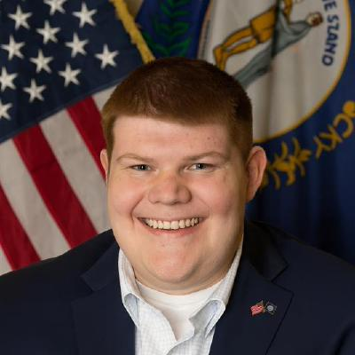

Chris Lyons
Building tools at the intersection of geospatial science and software engineering. Environmental regulatory GIS by day, open-source spatial tooling at every other hour. Based in Frankfort, Kentucky.

GIS Analyst III at the Kentucky Energy and Environment Cabinet, where I design enterprise geodatabase workflows, automate environmental regulatory data pipelines, and develop custom ArcGIS Pro SDK add-ins for mine permitting and reclamation programs.
My practice sits at the intersection of legacy government GIS infrastructure and modern cloud-native spatial development. I publish peer-reviewed research, maintain open-source Python packages on PyPI, and write about GeoAI through the Null Island Dispatch newsletter.
- Lead GIS analysis supporting mine permitting, compliance monitoring, and regulatory reporting
- Automated spatial workflows using Python, ArcPy, and ArcGIS Pro SDK — cutting manual processing time by ~45%
- Develop and maintain custom ArcGIS Pro SDK add-ins to replace legacy tools and standardize operations
- Manage enterprise Oracle SDE geodatabases and coordinate with DGI on statewide data standards
- QC and validation of statewide high-resolution orthoimagery covering 3,000+ square miles
- Aerial triangulation, accuracy assessments, and metrology documentation
- 2D/3D plats in AutoCAD and MicroStation for transportation and civil infrastructure projects
- UAS data collection, photogrammetric processing, and QA for construction monitoring
- Won AASHTO GIS-T Map Gallery People's Choice Award (2022) for a DSM visualization project
Python packages on PyPI for geospatial remote sensing, LiDAR processing, and data engineering.
- ArcGIS Pro
- ArcGIS Enterprise
- ArcGIS Online
- QGIS
- Global Mapper
- Python / ArcPy
- C# / .NET
- TypeScript
- Rust
- R
- COG / STAC
- GeoParquet
- PMTiles
- DuckDB Spatial
- H3 / PostGIS
- Oracle SDE
- Enterprise GDB
- PostGIS
- SQL Server
- Pro SDK (.NET)
- DAML / WPF / MVVM
- JS SDK 5.0
- Calcite
- React / Vite
- MapLibre GL
- Deck.gl
- Three.js / Babylon.js
- FastAPI
- Hyperspectral
- LiDAR / Point Cloud
- KyFromAbove
- DTM / DSM
- GPS & GNSS
- AutoCAD
- MicroStation
- Civil 3D
- UAS / Drone Ops
- Photogrammetry
Get in touch
Open to conversations about geospatial engineering, GeoAI, cloud-native spatial infrastructure, ArcGIS Pro SDK development, or open-source collaboration.